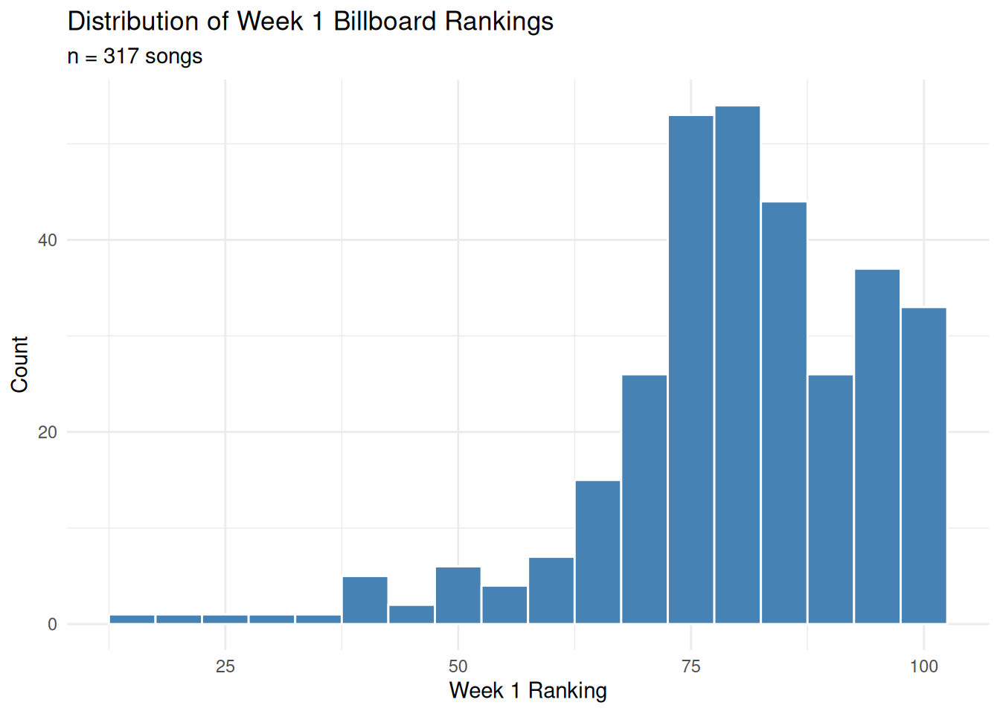
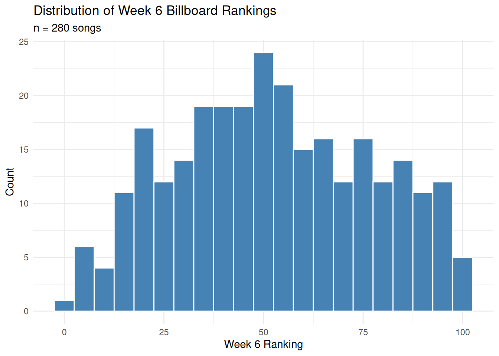
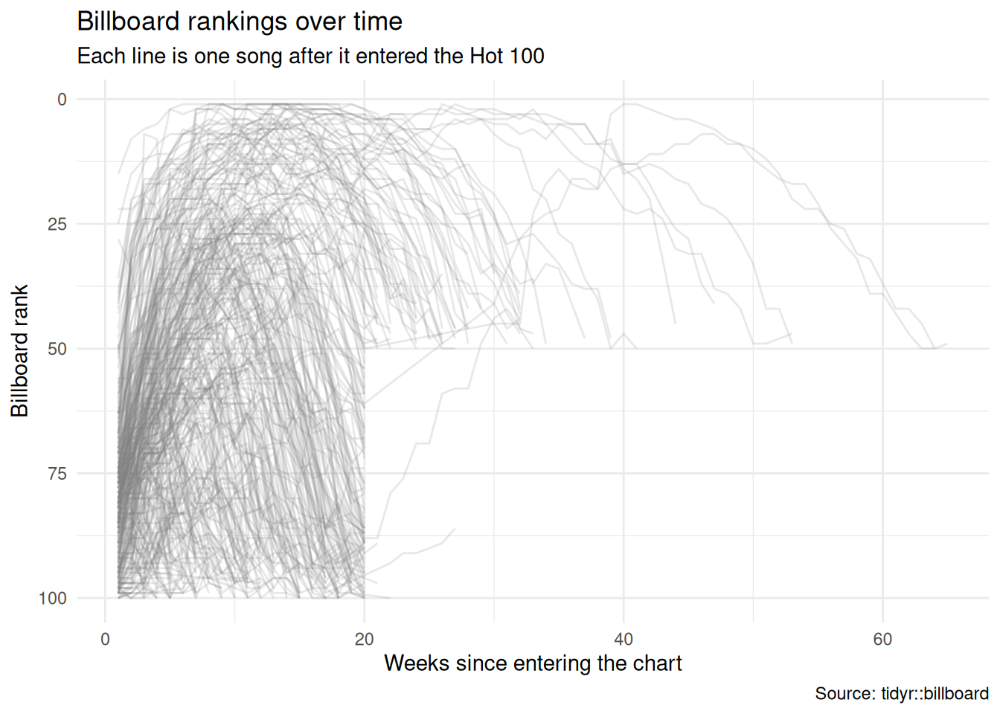
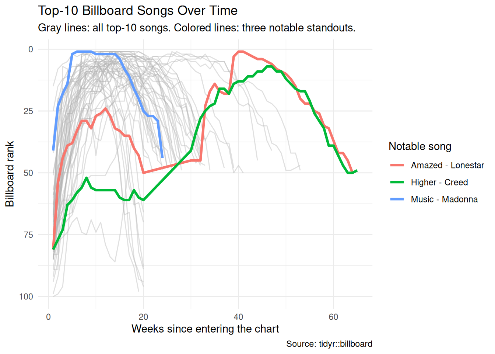
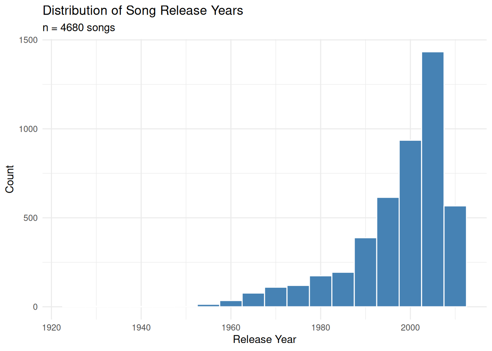
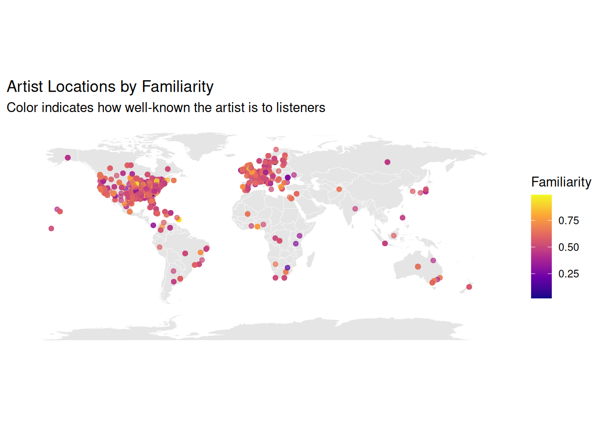
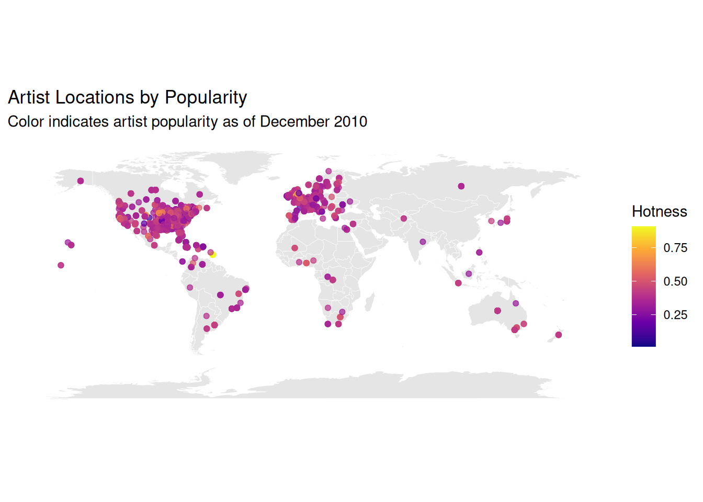
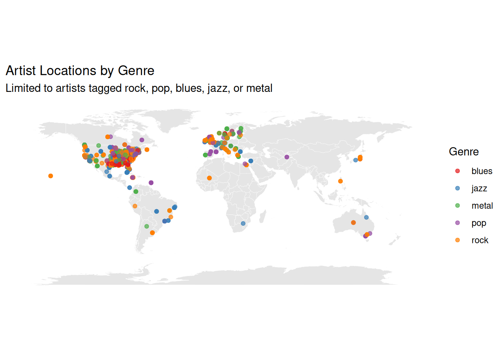
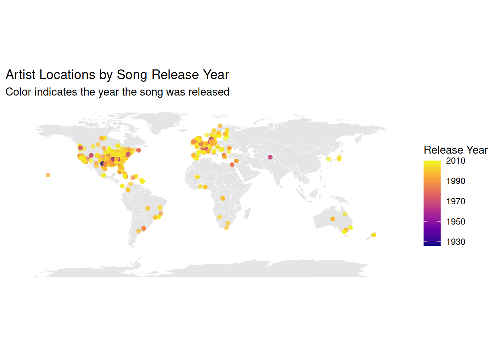

Min. 1st Qu. Median Mean 3rd Qu. Max.
"1999-06-05" "2000-02-05" "2000-04-29" "2000-05-03" "2000-08-12" "2000-12-30" Analyzing Music Data
Billboard Hot 100
We start by looking at the time period covered by the data, and how songs move through the chart over their first several weeks.


Week 1 rankings are spread fairly evenly across the chart, since that is simply where each song happens to debut. By week 6, the distribution has shifted toward the top of the chart — many lower-ranked debuts have already dropped off entirely, leaving a sample that skews toward stronger performers.
# A tibble: 6 × 3
week missing present
<chr> <int> <int>
1 wk1 0 317
2 wk4 17 300
3 wk10 73 244
4 wk20 171 146
5 wk40 310 7
6 wk76 317 0Missing values climb steadily from wk1 to wk76, confirming that most songs leave the chart well before reaching 76 weeks — only a small number of long-running hits remain by that point.
# A tibble: 2 × 2
re_entered n
<lgl> <int>
1 FALSE 302
2 TRUE 15None of the songs in this dataset leave the chart and later re-enter — once a song drops off, it stays off. Each song’s run is one continuous stretch of weeks.
# A tibble: 4 × 2
status n
<chr> <int>
1 Got worse 27
2 Improved 251
3 Missing by week 6 37
4 Stayed the same 2# A tibble: 1 × 1
median_rank_change
<dbl>
1 27Among songs still charting at week 6, the typical song has moved several spots from its debut position, consistent with the overall pattern of early climbers separating from early decliners.

Most songs follow a similar arc: an initial climb toward their peak rank, followed by a longer decline as they fall off the chart.
# A tibble: 3 × 7
category artist track first_rank best_rank week_at_best total_weeks
<chr> <chr> <chr> <dbl> <dbl> <int> <int>
1 Fastest to #1 Madon… Music 41 1 6 24
2 Slowest to #1 Lones… Amaz… 81 1 40 55
3 Longest run (top 1… Creed High… 81 7 46 57These three songs mark the extremes of chart behavior in this dataset: the quickest rise to number one, the slowest rise to number one, and the longest-lasting top-10 hit.

Against the backdrop of all top-10 songs, the three highlighted tracks show clearly different trajectories: a sharp, almost immediate rise to number one; a slow multi-week climb to the same peak; and a long, gradual run that stays within the top 10 far longer than most songs manage.
Music Dataset
This section uses song- and artist-level metadata from the Million Song Dataset.
artist.familiarity is a measure from 0 to 1 of how well-known the artist is to listeners, while artist.hotttnesss measures the artist’s popularity at the time the data was collected (December 2010), also on a scale of 0 to 1.
artist.familiarity artist.hotttnesss song.year song.tempo
Min. :0.0000 Min. :0.0000 Min. : 0.0 Min. : 0.00
1st Qu.:0.4676 1st Qu.:0.3253 1st Qu.: 0.0 1st Qu.: 96.96
Median :0.5636 Median :0.3807 Median : 0.0 Median :120.16
Mean :0.5652 Mean :0.3856 Mean : 934.7 Mean :122.90
3rd Qu.:0.6680 3rd Qu.:0.4539 3rd Qu.:2000.0 3rd Qu.:144.01
Max. :1.0000 Max. :1.0825 Max. :2010.0 Max. :262.83 The summary statistics alone don’t give a clear sense of how song.year is distributed, largely because many rows use 0 as a placeholder rather than a real year.

Once placeholder years are removed, the data skews heavily toward recent decades, reflecting better metadata coverage for newer releases than older ones.
A number of fields in this dataset use 0 as a placeholder for missing data rather than NA. The table below counts how many rows are affected in each column.
# A tibble: 6 × 2
column placeholder_count
<chr> <int>
1 artist.location 9999
2 release.name 9989
3 song.title 9992
4 song.year 5320
5 artist.familiarity 24
6 artist.hotttnesss 496artist.location and song.title are placeholders for nearly every row, making them unusable for analysis. song.year, artist.familiarity, and artist.hotttnesss are missing for a meaningful share of rows but still leave a usable sample.
# A tibble: 2 × 2
has_coords n
<lgl> <int>
1 FALSE 6258
2 TRUE 3742Note: many artists in this dataset have placeholder coordinates (0, 0), meaning their actual location is unknown — the maps below only reflect artists with usable latitude/longitude data.
By artist familiarity

By artist popularity

Familiarity and popularity highlight different artists. Familiarity reflects how broadly known an artist is over time, while popularity captures a snapshot from December 2010 — so an artist can rank high on one measure without ranking high on the other.
By genre

Genre tags are assigned using rock, pop, blues, jazz, and metal as priority keywords, so an artist matching more than one term is classified by whichever keyword comes first in that order. Coverage is concentrated in North America and Europe, the same regions with the most usable location data overall.
By release year

As with the release-year histogram earlier, most plotted points correspond to recent years, regardless of location — older releases are underrepresented across nearly every region.